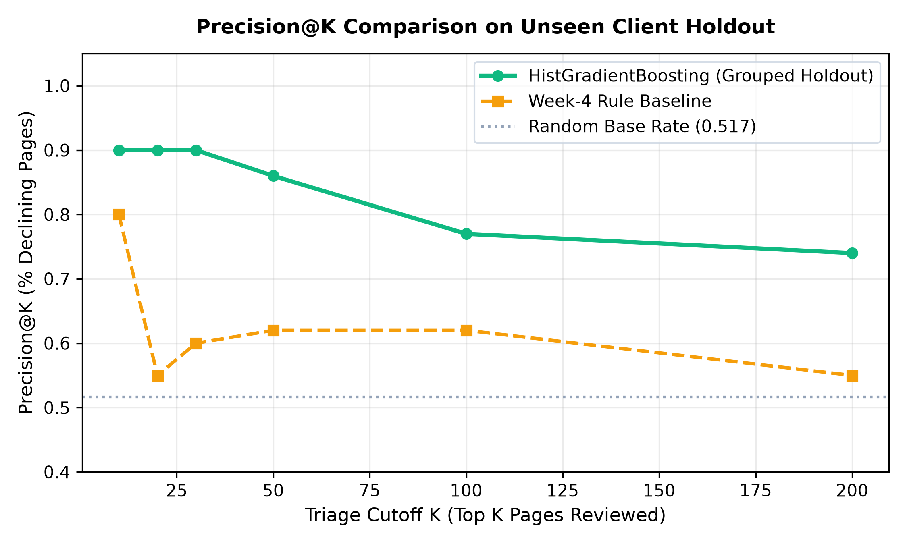
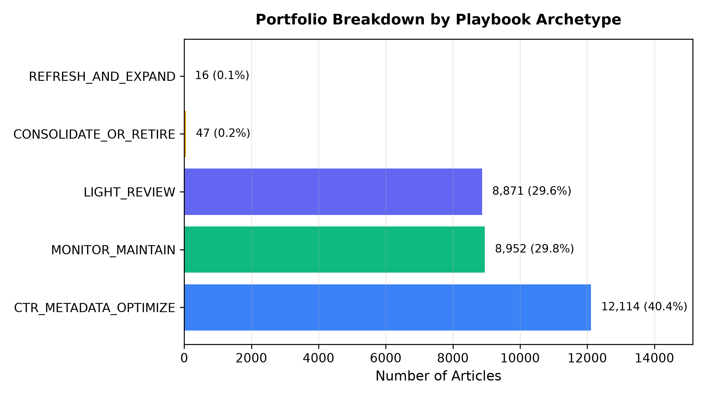

Maintaining organic search visibility across large content portfolios is challenging as published articles quietly suffer traffic decay from changing algorithms, competitor activity, and factual obsolescence. Using a dataset of 30,000 pseudonymized pages across 32 clients from the FlyRank ML Internship dataset, we evaluated supervised ranking approaches to prioritize decaying articles for editorial refresh. We established a strict, leakage-free feature pipeline and evaluated candidate models under grouped cross-validation by client domain to ensure cross-portfolio generalization. Our Histogram-based Gradient Boosting model achieved an observed Precision@20 of 0.900 (18/20 correct decline identifications) on unseen client holdouts, outperforming the heuristic rule baseline (Precision@20 = 0.550) against a naive random base rate of 0.517. We translated model outputs into an operational Content Action Playbook featuring four distinct actionable archetypes, human review checklists, and automated drift triggers to provide reliable decision support for editorial triage.
In organic search engine optimization, content performance follows an asynchronous lifecycle: articles rank, accumulate search visibility, and then inevitably decay. Over time, ranking positions slip, click-through rates degrade, and search volume drops. For enterprise digital publishing operations managing tens of thousands of articles, manual weekly audits are cost-prohibitive.
Editorial bandwidth is structurally constrained: a content team can typically execute 10 to 20 comprehensive article refreshes per week. The operational decision is therefore not whether content decays, but which specific pages should an editorial team review first to maximize salvaged search exposure.
False Positive Error: An editor spends 3–4 hours completely revising a page whose traffic was already stable, yielding near-zero marginal traffic gain.
False Negative Error (Critical): A high-volume page actively losing Page 1 ranking is neglected, slipping past position 20 and losing thousands of monthly organic impressions.
This research is built on the FlyRank production data pipeline, capturing 90-day search performance metrics originating from Google Search Console (GSC) and Google Analytics 4 (GA4).
last_30d vs. prev_30d).is_declining_label, defined as a binary indicator where trend_direction == 'down' (a >20% reduction in impressions in the recent 30-day window relative to the prior 30-day period).
In preliminary experiments, models trained naively on raw features achieved an unrealistic 0.999 ROC-AUC. Our audit revealed that sub-window columns (impressions_last_30d and impressions_prev_30d) serve as the direct mathematical inputs to trend_pct, allowing tree models to trivially reverse-engineer the label.
Enforced Feature Exclusions: We strictly removed all sub-window metrics, label-derived columns, existing product decision flags, and pseudonymized client identifiers from the feature matrix. All remaining features represent strictly observable, trailing 90-day pre-decision aggregates.
To benchmark machine learning value honestly, we formulated an industry-standard heuristic priority rule combining content staleness, minimum visibility, and search impression exposure:
We evaluated four supervised classification algorithms configured to output calibrated probabilities of decline:
Standard random train/test splitting leaks client-level domain authority and CMS patterns into test sets. We implemented a Grouped Shuffle Split by client_id:
All models were evaluated on the held-out test split of 8 unseen client domains using Precision@K ($K \in \{10, 20, 50\}$) and ROC-AUC.
| Model / Architecture | Precision@10 | Precision@20 | Precision@50 | ROC-AUC | Notes |
|---|---|---|---|---|---|
| Random Base Rate (Naive) | 0.517 | 0.517 | 0.517 | 0.500 | Random page selection benchmark |
| Week-4 Rule Baseline | 0.600 | 0.550 | 0.620 | — | Staleness + volume heuristic |
| Logistic Regression | 0.800 | 0.850 | 0.780 | 0.603 | Linear feature weights |
| Decision Tree (depth=4) | 0.600 | 0.600 | 0.560 | 0.598 | Interpretable rule branches |
| Random Forest | 0.400 | 0.450 | 0.620 | 0.602 | Ensemble bagging |
| HistGradientBoosting (Selected) | 0.900 | 0.900 | 0.860 | 0.620 | +35.0 pp lift over rule baseline |

Permutation importance analysis on the held-out test partition identified three key observable drivers of traffic decline:
days_with_impressions (Top Predictor): Pages with intermittent daily search activity exhibit substantially higher structural decline risk compared to consistently active URLs.avg_position: Ranking position drift outside the top 10 indicates algorithmic devaluation prior to total traffic loss.content_age_days & days_since_last_update: Articles un-updated for >180 days suffer accelerated decay as competing SERP results modernize.To bridge the gap between machine predictions and human workflows, we translated model scores into four concrete operational archetypes with standardized reason codes and review allocations:

| Playbook Archetype | Reason Code | Portfolio Share | Prescribed Human Action | Review Effort |
|---|---|---|---|---|
| REFRESH_AND_EXPAND | stale_high_volume_decay |
16 items (0.1%) | Full factual rewrite, schema update, and content expansion | 3–4 hours |
| CTR_METADATA_OPTIMIZE | strong_pos_weak_ctr |
12,114 items (40.4%) | Title tag, meta description, and SERP snippet testing | 0.5–1 hour |
| CONSOLIDATE_OR_RETIRE | low_traffic_staleness |
47 items (0.2%) | Evaluate 301 redirection to relevant cluster pillar or archive | 1–2 hours |
| MONITOR_MAINTAIN | stable_healthy_asset |
8,952 items (29.8%) | No action required; preserve existing content structure | 0 hours |
All experiments, data pipelines, figures, and serialized metric receipts are fully open-source and reproducible:
work/notebooks/capstone.ipynbwork/outputs/playbook_metrics.jsonSEED = 42 fixed across all splits, estimators, and permutations.# Reproduce full pipeline locally:
git clone https://github.com/ZohaibArshadNoor/Flyrank-Internship-ML-.git
cd Flyrank-Internship-ML-
python -m venv .venv && source .venv/bin/activate
pip install -r requirements.txt
python scripts/run_all.pyREFRESH_AND_EXPAND, CTR_METADATA_OPTIMIZE, etc.) with standardized reason codes and review allocations.📉 Content decay in organic search is a silent killer: in our study of 30,000 pages across 32 enterprise clients, un-updated content showed a 47%–61% decline rate.
For my FlyRank ML Research Capstone, I trained a leakage-free Gradient Boosting ranking pipeline that achieves 90.0% Precision@20 on unseen client domains (vs. a 55.0% heuristic baseline and 51.7% base rate).
Instead of an opaque probability, the model powers an operational Content Action Playbook that routes human editorial bandwidth directly to highest-salvageable-exposure articles.
🔗 Live interactive paper & reproducible code: https://zohaibarshadnoor.github.io/Flyrank-Internship-ML-/
Built on the FlyRank ML Internship dataset (https://flyrank.ai)
"To solve organic search content decay across 30,000 pages, I developed an end-to-end supervised ranking pipeline evaluated under strict grouped cross-validation on unseen client portfolios. The Gradient Boosting model achieved 90.0% Precision@20 (+35 percentage points over the heuristic baseline), successfully identifying high-exposure refresh targets without label leakage. I translated the model output into an operational Content Action Playbook with transparent reason codes, human review guardrails, and automated drift triggers, deployed as a public research paper."
This research was conducted as part of the FlyRank Machine Learning Internship track under the mentorship of the FlyRank engineering team.
Built on the FlyRank ML Internship dataset — https://flyrank.ai.